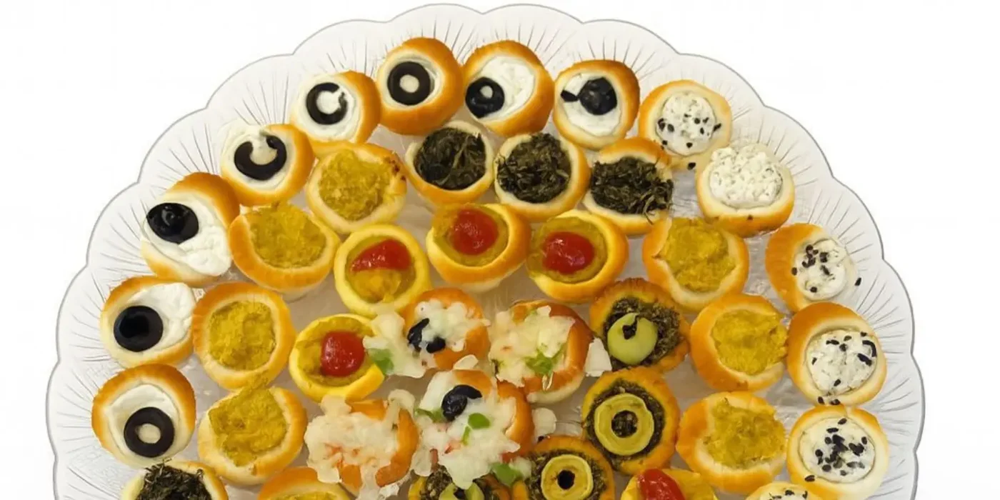
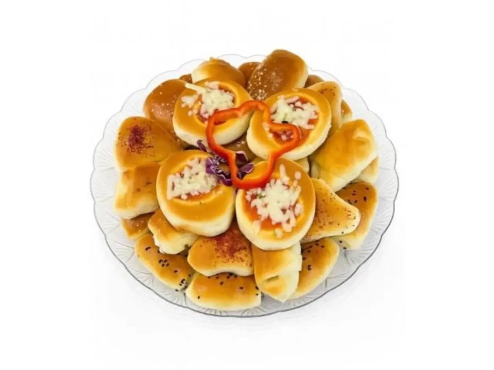
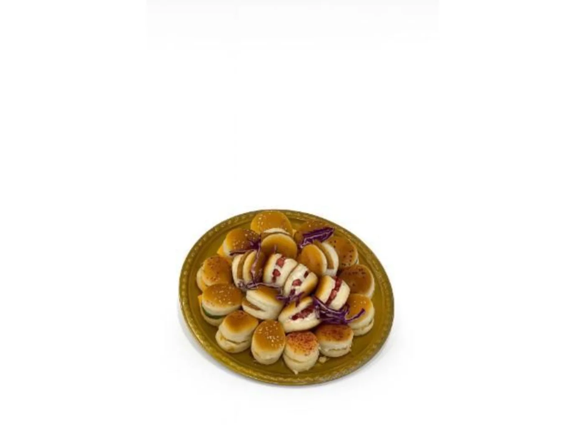
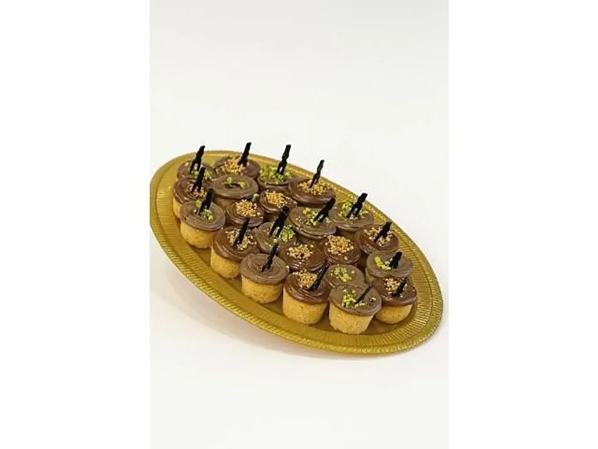
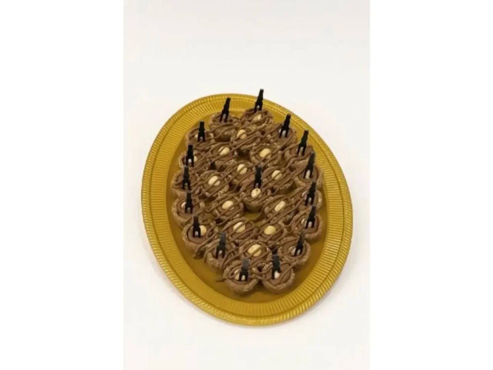
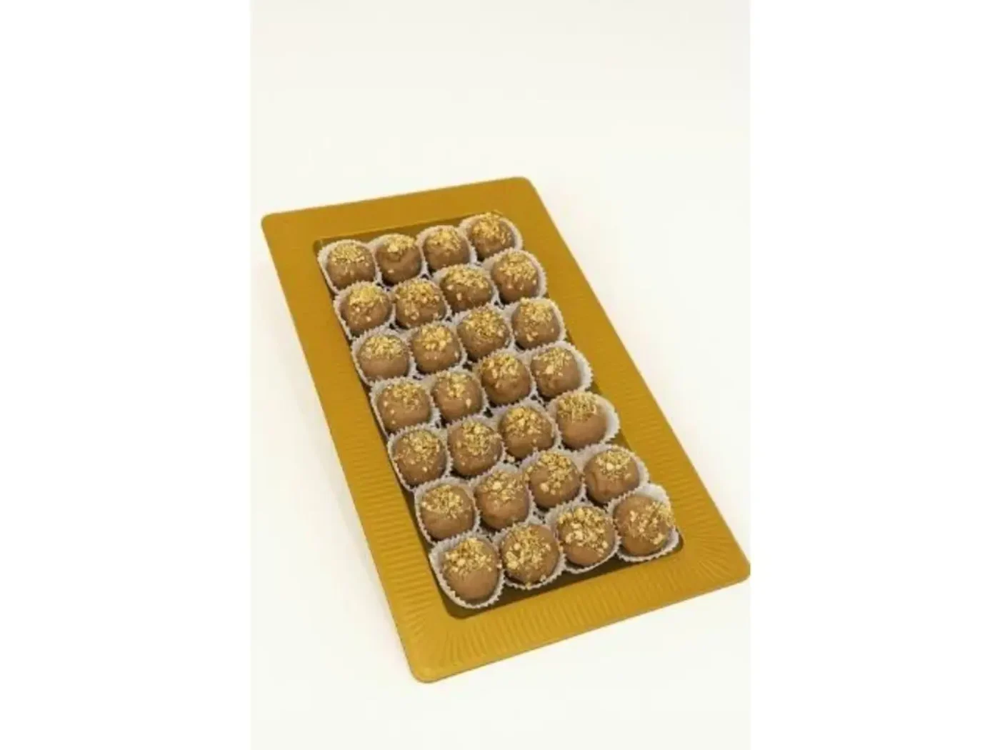
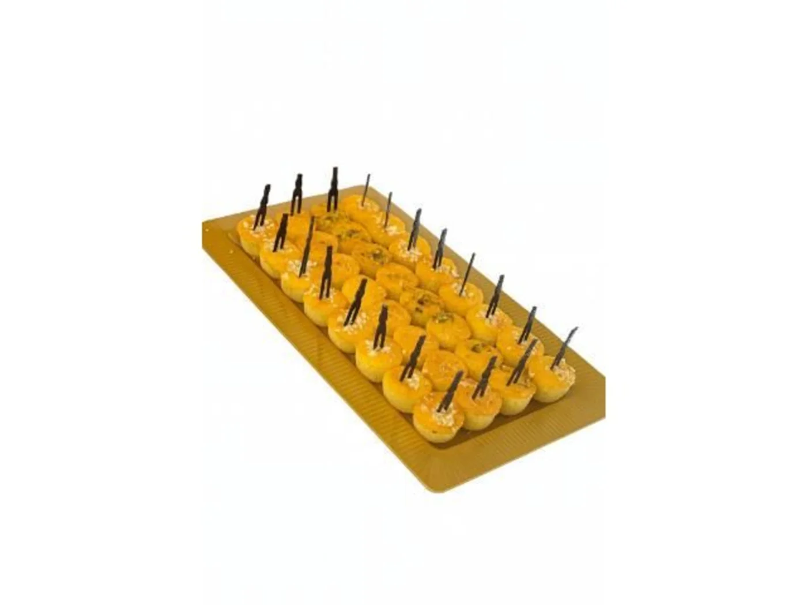
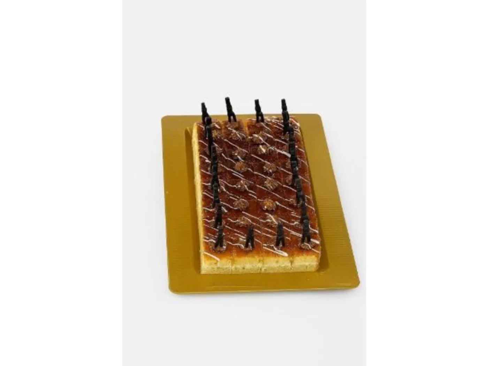
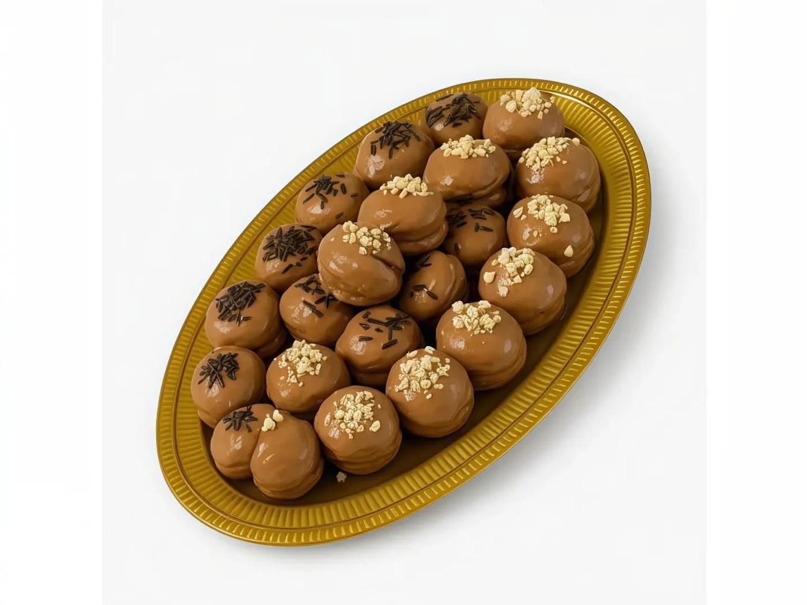

AL HANEEN / TABUKللّمة طعم
للّمة طعم
من الحنين.
فطائر مالحة، حلويات وكيك. اختر ما يناسب ضيافتك وجهّز تفاصيل طلبك قبل التواصل مع فرع العليا.
الفطائر والموالحالحلوياتالكيك

AL HANEENتبوك، السعودية
01تفاصيل تهمك
الحنينالخدمة تبدأ بتفاصيل واضحةتواصل مباشرتبوك
WHAT WE DO / الخدماتمن هنا تبدأ
من هنا تبدأ
خطوتك القادمة.
اختر ما تحتاجه، وجهّز التفاصيل التي تساعد الفريق على الرد على استفسارك.
MADE PERSONALطلبك،
طلبك،
بتفاصيله.
كلما كانت التفاصيل أوضح، أصبح التواصل أسهل. جهّز طلبك في خطوات قصيرة ثم راجعه قبل فتح واتساب.
01اختر الخدمة المناسبة
02أضف الموعد وما يهمك
03ناقش التفاصيل والسعر مع الفريق
DETAILS / التفاصيل
اختيارات للمناسبة.
استفسر عن التوفر والتفاصيل عند الطلب. يمكن مشاركة وصف اختيارك عبر واتساب.








كل التفاصيل تبدأ
بمحادثة.
تبوك، العليا، طريق الأمير سلطان
وسائل التواصل والموقع